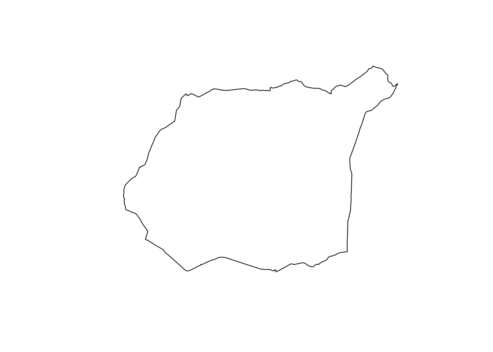
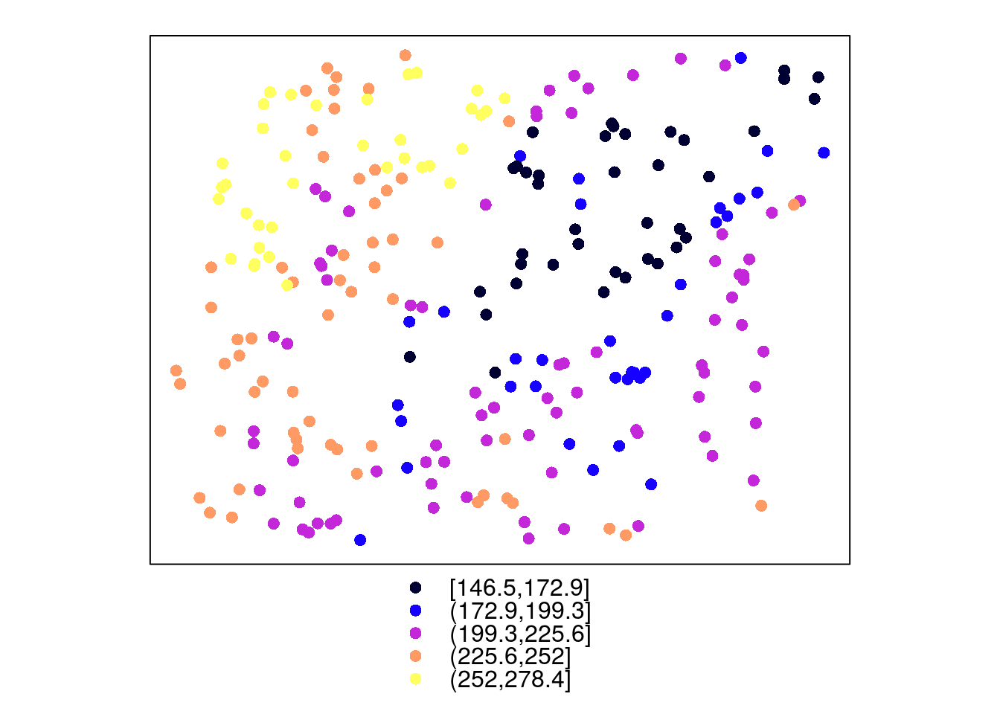
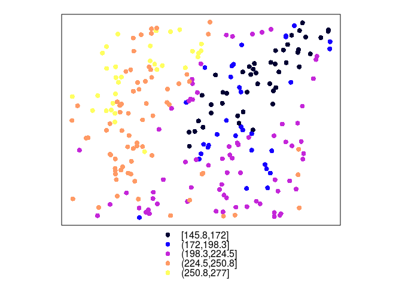
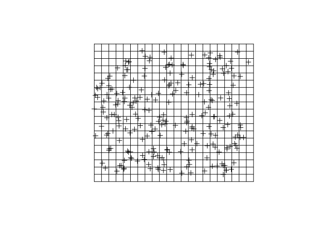
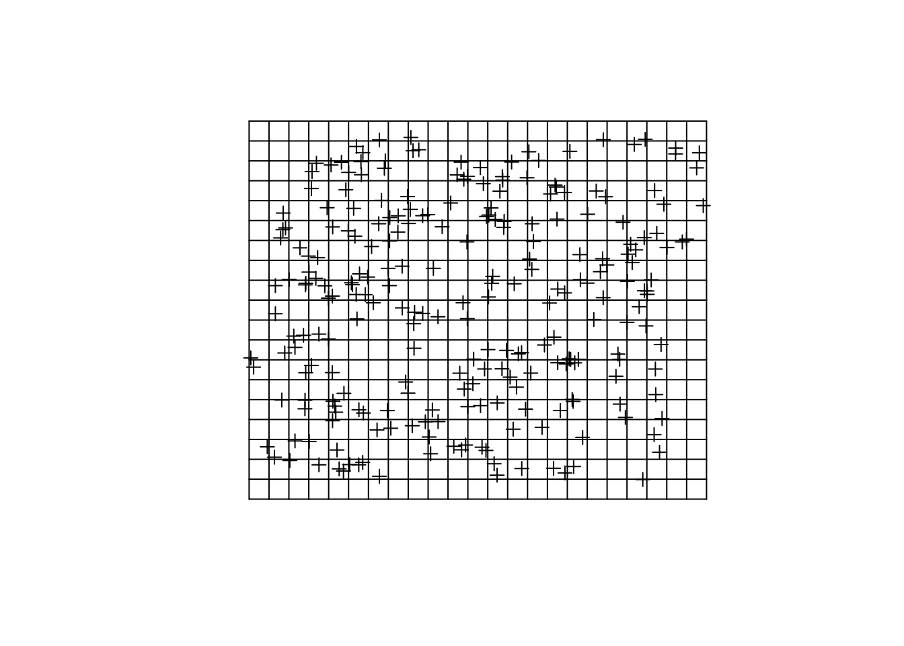

Rodział 2 R a dane przestrzenne
2.1 R a dane przestrzenne
2.1.1 Pakiety
R zawiera wiele funkcji pozwalających na przetwarzanie, wizualizację i analizowanie danych przestrzennych. Zawarte są one w szeregu pakietów (zbiorów funkcji), między innymi:
- GIS -
sp,rgdal,raster,rasterVis,rgeos,maptools,GeoXp,deldir,pgirmess,spatstat - Geostatystyka -
gstat,geoR,geoRglm,fields,spBayes,RandomFields,vardiag
Więcej szczegółów na ten temat pakietów R służących do analizy przestrzennej można znaleźć pod adresem https://cran.r-project.org/web/views/Spatial.html.
2.1.2 Reprezentacja danych nieprzestrzennych
- Wektory (ang. vector):
- liczbowe (ang. integer, numeric) -
c(1, 2, 3)ic(1.21, 3.32, 4.43) - znakowe (ang. character) -
c('jeden', 'dwa', 'trzy') - logiczne (ang. logical) -
c(TRUE, FALSE) - czynnikowe (ang. factor) -
c('jeden', 'dwa', 'trzy', 'jeden')
- liczbowe (ang. integer, numeric) -
- Ramki danych (ang. data.frame) - to zbiór zmiennych (kolumn) oraz obserwacji (wierszy) zawierających różne typy danych
- Macierze (ang. matrix)
- Listy (ang. list)
2.1.3 Reprezentacja danych przestrzennych
- Obiekty klasy
Spatial*z pakietusp- wszystkie z nich zawierają dwie dodatkowe informacje:- bounding box (
bbox) - obwiednia - określa zasięg danych - CRS (
proj4string) - układ współrzędnych
- bounding box (
- Najczęściej stosowane obiekty klasy
Spatial*toSpatialPointsDataFrame,SpatialPolygonsDataFrameorazSpatialGridDataFrame - Obiekty klasy
Raster*z pakieturaster, tj.RasterLayer,RasterStack,RasterBrick - Inne
2.1.4 GDAL/OGR
- http://www.gdal.org/
- GDAL to biblioteka zawierająca funkcje służące do odczytywania i zapisywania danych w formatach rastrowych
- OGR to biblioteka służąca to odczytywania i zapisywania danych w formatach wektorowych
- Pakiet
rgdalpozwala na wykorzystanie bibliotek GDAL/OGR w R
2.1.5 PROJ.4
- Dane przestrzenne powinny być zawsze powiązane z układem współrzędnych
- PROJ.4 - to biblioteka pozwalająca na identyfikację oraz konwersję pomiędzy różnymi układami współrzędnych
- Strona http://www.spatialreference.org/ zawiera bazę danych układów współrzędnych
2.1.6 EPSG
- Kod EPSG (ang. European Petroleum Survey Group) pozwala na łatwe identyfikowanie układów współrzędnych
- Przykładowo, układ PL 1992 może być określony jako:
'+proj=tmerc +lat_0=0 +lon_0=19 +k=0.9993 +x_0=500000 +y_0=-5300000 +ellps=GRS80 +towgs84=0,0,0,0,0,0,0 +units=m +no_defs'
- …lub też za pomocą kodu EPSG:
'+init=epsg:2180'
2.1.7 Układ geograficzny
- Proporcje pomiędzy współrzędną oznaczającą długość geograficzną (X) a oznaczającą szerokość geograficzną (Y) nie są równe 1:1
- Wielkość oczka siatki jest zmienna
- Nie pozwala to na proste określanie odległości czy powierzchni
- Jednostka mapy jest abstrakcyjna
- Powyższe cechy układów geograficznych powodują, że do większości algorytmów w geostatystyce wykorzystywane są układy współrzędnych prostokątnych płaskich
2.2 Import danych
R pozwala na odczytywanie danych przestrzennych z wielu formatów. Do najpopularniejszych należą dane z plików .csv, dane z plików .shp, oraz dane z plików w formacie geotiff.
2.2.1 Format .csv (dane punktowe)
Dane z plików tekstowych (np. .csv) można odczytać za pomocą uogólnionej funkcji read.table() lub też funkcji szczegółowych - read.csv() lub read.csv2().
dane_punktowe <- read.csv('dane/punkty.csv')head(dane_punktowe)## srtm clc temp ndvi savi x y
## 1 175.7430 1 13.852222 0.6158061 0.4189449 750298.0 716731.6
## 2 149.8111 1 15.484209 0.5558816 0.3794864 753482.9 717331.4
## 3 272.8583 NA 12.760814 0.6067462 0.3745572 747242.5 720589.0
## 4 187.2777 1 14.324648 0.3756170 0.2386246 755798.9 718828.1
## 5 260.1366 1 15.908549 0.4598393 0.3087599 746963.5 717533.5
## 6 160.1416 2 9.941118 0.5600288 0.3453627 756801.6 720474.1Po wczytaniu za pomocą funkcji read.csv(), nowy obiekt (np. dane_punktowe) jest reprezentowany za pomocą klasy nieprzestrzennej data.frame. Aby obiekt został przetworzony do klasy przestrzennej, konieczne jest nadanie mu współrzędnych. W tym wypadku współrzędne znajdowały się w kolumnach x oraz y. Nadanie układu współrzędnych odbywa się poprzez funkcję coordinates().
library('sp')
coordinates(dane_punktowe) <- ~x+y
summary(dane_punktowe)## Object of class SpatialPointsDataFrame
## Coordinates:
## min max
## x 745592.5 756967.8
## y 712642.4 721238.7
## Is projected: NA
## proj4string : [NA]
## Number of points: 248
## Data attributes:
## srtm clc temp ndvi
## Min. :146.5 Min. :1.000 Min. : 7.883 Min. :0.2024
## 1st Qu.:191.5 1st Qu.:1.000 1st Qu.:12.003 1st Qu.:0.4636
## Median :217.9 Median :1.000 Median :14.941 Median :0.5154
## Mean :214.9 Mean :1.481 Mean :15.273 Mean :0.5047
## 3rd Qu.:239.5 3rd Qu.:2.000 3rd Qu.:17.630 3rd Qu.:0.5742
## Max. :278.4 Max. :4.000 Max. :24.945 Max. :0.6597
## NA's :3 NA's :5 NA's :1 NA's :1
## savi
## Min. :0.0824
## 1st Qu.:0.2935
## Median :0.3256
## Mean :0.3176
## 3rd Qu.:0.3594
## Max. :0.4404
## NA's :1Ważne, ale nie wymagane, jest także dodanie informacji o układzie przestrzennym danych za pomocą funkcji proj4string().
proj4string(dane_punktowe) <- '+init=epsg:2180'
summary(dane_punktowe)## Object of class SpatialPointsDataFrame
## Coordinates:
## min max
## x 745592.5 756967.8
## y 712642.4 721238.7
## Is projected: TRUE
## proj4string :
## [+init=epsg:2180 +proj=tmerc +lat_0=0 +lon_0=19 +k=0.9993
## +x_0=500000 +y_0=-5300000 +ellps=GRS80 +towgs84=0,0,0,0,0,0,0
## +units=m +no_defs]
## Number of points: 248
## Data attributes:
## srtm clc temp ndvi
## Min. :146.5 Min. :1.000 Min. : 7.883 Min. :0.2024
## 1st Qu.:191.5 1st Qu.:1.000 1st Qu.:12.003 1st Qu.:0.4636
## Median :217.9 Median :1.000 Median :14.941 Median :0.5154
## Mean :214.9 Mean :1.481 Mean :15.273 Mean :0.5047
## 3rd Qu.:239.5 3rd Qu.:2.000 3rd Qu.:17.630 3rd Qu.:0.5742
## Max. :278.4 Max. :4.000 Max. :24.945 Max. :0.6597
## NA's :3 NA's :5 NA's :1 NA's :1
## savi
## Min. :0.0824
## 1st Qu.:0.2935
## Median :0.3256
## Mean :0.3176
## 3rd Qu.:0.3594
## Max. :0.4404
## NA's :1Proste wyświetlenie uzyskanych danych klasy przestrzennej, np. SpatialPointsDataFrame, można uzyskać za pomocą funkcji plot().
plot(dane_punktowe)
2.2.2 Dane poligonowe (formaty gisowe)
Dane wektorowe (np. shapefile) można odczytać za pomocą funkcji readOGR() z pakietu rgdal. Dla danych w formacie shapefile, przyjmuje ona co najmniej dwa argumenty - dsn oraz layer. Argument dsn określa folder, w którym znajdują się dane. W przypadku, gdy dane znajdują się w folderze roboczym należy ten argument określić za pomocą znaku kropki ('.'). Argument layer wymaga podania nazwy pliku bez jego rozszerzenia. Przykładowo, gdy pliki nazywają się granica.dbf, granica.prj, granica.shp, oraz granica.shx - konieczne jest podanie w argumencie layer jedynie nazwy granica.
library('rgdal')## rgdal: version: 1.1-8, (SVN revision 616)
## Geospatial Data Abstraction Library extensions to R successfully loaded
## Loaded GDAL runtime: GDAL 1.11.3, released 2015/09/16
## Path to GDAL shared files: /usr/share/gdal/1.11
## Loaded PROJ.4 runtime: Rel. 4.9.2, 08 September 2015, [PJ_VERSION: 492]
## Path to PROJ.4 shared files: (autodetected)
## Linking to sp version: 1.2-3granica <- readOGR(dsn='dane', layer='granica')## OGR data source with driver: ESRI Shapefile
## Source: "dane", layer: "granica"
## with 1 features
## It has 3 fieldsplot(granica)
2.2.3 Rastry
Istnieje kilka sposobów odczytu danych rastrowych w R. Do najpopularniejszych należą funkcje readGDAL() z pakietu rgdal oraz raster() z pakietu raster. W tym drugim przypadku należy jedynie podać ścieżkę do pliku rastrowego.
library('raster')
siatka_raster <- raster('dane/siatka.tif')
plot(siatka_raster)
2.3 Eksport danych
2.3.1 Zapisywanie danych wektorowych
R pozwala również na zapisywanie danych przestrzennych. W przypadku zapisu danych wektorowych za pomocą funkcji writeOGR() konieczne jest podanie nazwy zapisywanego obiektu (np. poligon), folderu w którym chcemy zapisać plik (np. nazwa_folderu), nazwę zapisywanych plików bez rozszerzenia (np. nowy_poligon), oraz sterownik - w przypadku danych shapefile jest to ESRI Shapefile.
writeOGR(poligon, dsn='nazwa_folderu', layer='nowy_poligon', driver='ESRI Shapefile')2.3.2 Zapisywanie danych rastrowych
Najprostszym sposobem zapisania danych rastrowych jest użycie funkcji writeRaster(). Wymaga ona podania dwóch argumentów - nazwy zapisywanego obiektu (np. siatka_raster) oraz ścieżki i nazwy nowego pliku wraz z rozszerzeniem (np. nazwa_folderu/nowy_raster.tif).
writeRaster(siatka_raster, filename='nazwa_folderu/nowy_raster.tif')2.4 Wizualizacja danych 2D
Do wizualizacji danych przestrzennych w R służy co najmniej kilkanaście różnych pakietów. Poniżej pokazane są przykłady kilku najprostszych funkcji - plot() oraz spplot() z pakietu sp oraz levelplot() z pakietu rasterVis.
2.4.1 Dane punktowe
Funkcja plot() idealnie nadaje się do szybkiego przyjrzenia się, np. rodzajowi próbkowania danych.
plot(dane_punktowe)
Funkcja spplot() w prosty sposób pozwala na obejrzenie rozkładu wartości wybranej zmiennej. Należy w niej podać nazwę obiektu oraz nazwę wyświetlanej zmiennej. Poniżej można zobaczyć przykłady dla zmiennych temp oraz srtm.
spplot(dane_punktowe, 'temp')
spplot(dane_punktowe, 'srtm')
2.4.2 Dane punktowe - kategorie
Nie zawsze dane mają postać ciągłych wartości - bywają one również określeniami różnych klas. W takich sytuacjach należy wcześniej przetworzyć typ danych do postaci kategorycznej (as.factor()). Następnie można je wyświetlić za pomocą funkcji spplot().
dane_punktowe@data$clc <- as.factor(dane_punktowe@data$clc)
spplot(dane_punktowe, 'clc')
2.4.3 Rastry
Wyświetlanie danych w formacie rastrowym może odbyć się z użyciem funkcji levelplot(). Wymaga ona jedynie zdefiniowania obiektu do wizualizacji. W poniższym przypadku dodatkowo ustawiono argument margin=FALSE co wyłącza wyświetlanie tzw. histogramów marginalnych (ang. marginal historgram).
library('rasterVis')
levelplot(siatka_raster, margin=FALSE)
2.5 Tworzenie siatek
W większości przypadków analiz geostatystycznych konieczne jest stworzenie siatki interpolacyjnej. Istnieją dwa podstawowe rodzaje takich siatek - siatki regularne oraz siatki nieregularne.
2.5.1 Siatki regularne
Siatki regularne mają kształt prostokąta obejmującego cały analizowany obszar. Określenie granic obszaru można wykonać na podstawie zasięgu danych punktowych za pomocą funkcji bbox() z pakietu sp lub funkcji extent() z pakietu raster.
bbox(dane_punktowe)## min max
## x 745592.5 756967.8
## y 712642.4 721238.7extent(dane_punktowe)## class : Extent
## xmin : 745592.5
## xmax : 756967.8
## ymin : 712642.4
## ymax : 721238.7Do stworzenia siatki można użyć funkcji expand.grid(). Wymaga ona określenia dwóch argumentów - x oraz y (taka ich nazwa nie jest obowiązkowa). Oba argumenty przyjmują trzy wartości: (i) from oznaczający wartość początkową współrzędnej, (ii) to określający wartość końcową współrzędnej, oraz (iii) by określający rozdzielczość. Przy ustalaniu wartości początkowej i końcowej konieczne jest ich rozszerzenie względem wartości z funkcji bbox() lub extent(), aby wszystkie analizowane punkty znalazły się na badanym obszarze.
siatka <- expand.grid(x = seq(from = 745050, to = 757050, by = 500),
y = seq(from = 712650, to = 721650, by = 500))Utworzony w ten sposób obiekt wymaga określenia współrzędnych (funkcja coordinates()), potwierdzenia że dane mają być siatką (funkcja gridded()), oraz przypisania układu współrzędnych z obiektu punktowego (funkcja proj4string()).
coordinates(siatka) <- ~x + y
gridded(siatka) <- TRUE
proj4string(siatka) <- proj4string(dane_punktowe)Alternatywnie, do stworzenia siatki można wykorzystać funkcję makegrid(). Tworzy ona nowy obiekt na podstawie istniejącego obiektu punktowego oraz zadanej rozdzielczości.
siatka <- makegrid(dane_punktowe, cellsize=500)
names(siatka) <- c('x', 'y')
coordinates(siatka) <- ~x + y
gridded(siatka) <- TRUE
proj4string(siatka) <- proj4string(dane_punktowe)2.5.2 Siatki regularne
Sprawdzenie, czy uzyskana siatka oraz dane punktowe się na siebie nakładają można sprawdzić za pomocą funkcji plot(). W poniższym przykładzie, pierwszy wiersz służy wyświetleniu siatki, a drugi dodaje dane punktowe z użyciem argumentu add.
plot(siatka)
plot(dane_punktowe, add=TRUE)
2.5.3 Siatki nieregularne - klasa RasterLayer
Siatki nieregularne mają zazwyczaj kształt wieloboku obejmującego analizowany obszar. Mogą one powstać, np. w oparciu o wcześniej istniejące granice. Siatki nieregularne w R mają zazwyczaj klasę RasterLayer lub SpatialPixelsDataFrame. Pierwsza z klas jest elastyczniejsza i prostsza w użyciu, podczas gdy druga jest lepiej wspierana przez funkcje geostatystyczne, np. z pakietu gstat.
W poniższym przypadku odczytywana jest granica badanego obszaru z pliku shapefile. Taki obiekt można np. stworzyć za pomocą oprogramowania gisowego takiego jak QGIS. Następnie na podstawie tego obiektu tworzony jest obiekt klasy RasterLayer, a za pomocą funkcji res() definiowana jest jego rozdzielczość. W kolejnym kroku ustala się wartość wszystkich oczek siatki na zero, oraz poprzez funkcję proj4string() ujednolica się definicję układu współrzędnych siatki. Ostatnim krokiem jest przycięcie siatki do nieregularnego obszaru z użyciem funkcji mask().
granica <- readOGR(dsn='dane', layer='granica')## OGR data source with driver: ESRI Shapefile
## Source: "dane", layer: "granica"
## with 1 features
## It has 3 fieldssiatka_n <- raster(extent(granica))
res(siatka_n) <- c(250, 250)
siatka_n[] <- 0
proj4string(siatka_n) <- proj4string(granica)
siatka_n <- mask(siatka_n, granica)Wynik przetworzenia można zobaczyć z użyciem funkcji levelplot.
levelplot(siatka_n, margin=FALSE)
2.5.4 Siatki nieregularne - klasa SpatialPixelsDataFrame
Nieregularną siatkę klasy RasterLayer łatwo jest przetworzyć do klasy SpatialPixelsDataFrame.
siatka_n <- as(siatka_n, 'SpatialPointsDataFrame')
siatka_n <- siatka_n[!is.na(siatka_n@data$layer), ]
gridded(siatka_n) <- TRUE
plot(siatka_n)